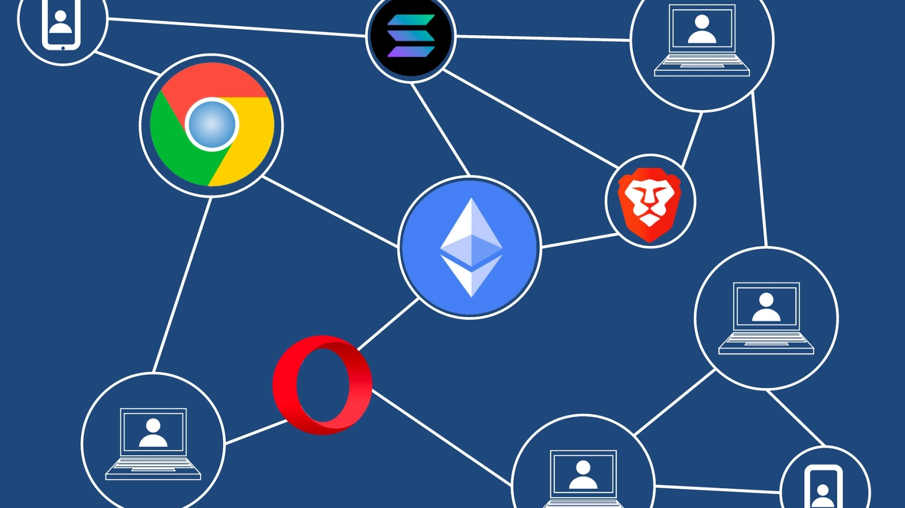
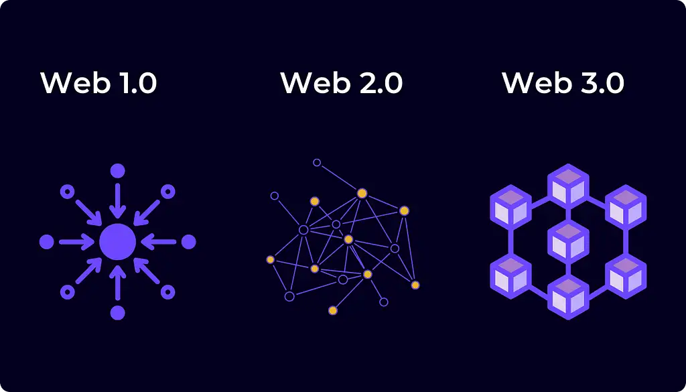

Web 3.0 crypto coins are cryptocurrencies belonging to blockchain projects that spearhead the decentralization of the internet. They are also some of the most popular cryptocurrencies in the space, often giving back lucrative returns to investors. With over 1000 web 3.0 crypto coins to choose from, finding the right ones can be quite a headache.Our team compiled a list of the best and safest web 3.0 crypto coins to invest in based on emerging technologies, rate of adoption, current market value, and potential prices in the future.
Read more-WEB3
Web3 cryptos are a new wave of cryptocurrencies that focus on making the decentralized vision of Web3 a reality. They combine blockchain technology with smart contracts to give people control over their data and make transactions without relying on third parties. Web3 is also known as the third generation of the internet. It aims to remove control from large corporations and operate in a decentralized way that is owned, built and operated by the users themselves
Read more-
A cryptocurrency associated with Web3 may provide various services formerly offered by cloud providers, such as computation, bandwidth, storage, identification and hosting services. With the rapid growth of cryptocurrencies and Web3, developers have been working on improving both technologies by making them more scalable, secure and efficient. Web3 is often mentioned with cryptocurrencies because they share the core principles of decentralization and equal access.
Read more-Web 3.0 is a term used to describe the next generation of the internet. At the forefront of this are emerging technologies such as the blockchain protocols, smart contracts, crypto coins, artificial intelligence, and machine learning. In this guide, we discuss the best Web 3 crypto coins to buy for long-term upside potential including some new altcoin projects.
Read more-

Web 3.0 will be supported by a variety of niche sectors from within the blockchain industry. This includes everything from smart contracts and gaming and finance and the Metaverse. And as such, you can gain access to the Web 3.0 phenomenon by investing in a selection of top-rated projects. In the sections below, we take a closer look at the 10 best Web 3.0 coins to consider buying right now.
Read more-The digital age comes with its own lexicon, a bewildering array of buzz phrases, words, and acronyms designed to confuse as much as they are to inform. Many of these new terms have found their way into our everyday vocabularies, although the meanings often get confused and blurred. For instance, many people use “the Web” and “the Internet” interchangeably when they are, in fact, two different things. Furthermore, there’s more than one version of the Web. Are you intrigued yet? This article will help you differentiate between Web 1.0, 2.0, and 3.0. It provides a Web 1.0 definition, Web 2.0 definition, Web 3.0 definition, Web 1.0 2.0 3.0 examples, and comparisons such as Web 1.0 vs. Web 2.0.
Read more-
